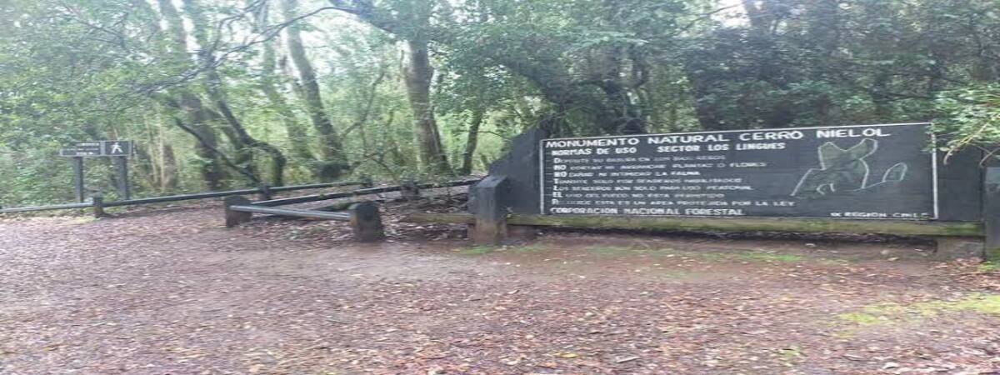

Descripción de la Experiencia
Recorrido autoguiado o acompañado por miembros de la comunidad local a través del Monumento Natural Cerro Ñielol. Durante el trayecto aprenderás sobre la flora nativa, especies protegidas y la historia cultural mapuche vinculada a este ecosistema protegido en pleno corazón de Temuco.
Duración: 2 Horas
Dificultad: Fácil - Media
Ubicación: Cerro Ñielol, Temuco
Estado: --